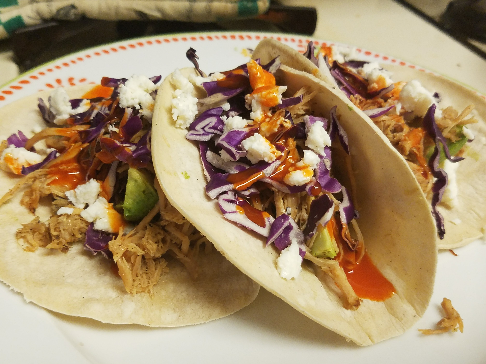

Slow-cooked Pork Shoulder

Description
Makes great BBQ sliders & street tacos!
Ingredients
- 2.5 lbs Bone-in Pork Shoulder (larger layer of fat yields greater chance for a crispy bite and stronger flavor)
- 1 Fresh Shallot
- 1 Fresh Garlic Bulb
- Preferred All-Spice/Seasoning Mix
- Olive Oil
- Vinegar
- Preferred BBQ sauce/mix
Steps
- preheat a lightly oiled cast-iron skillet using mid heat
- preheat slow cooker on med/high heat with 1 tbsp oil and vinegar to taste
- peel, dice, and simmer shallot
- peel and simmer all cloves of garlic from the bulb
- carefully score the bone/membrane portion of pork and toss out
- brush a thin layer of oil on pork shoulder
- optional: score pork and then stuff fresh or simmered garlic/shallot into the meat
- add the remaining simmered shallot and garlic to slow cooker
- apply a generous seasoning rub to pork shoulder
- sear pork shoulder fat-side down turning it occasionally until evenly seared
- after searing add the shoulder to slow cooker at med/med-high temp
- begin to remove bones after enough time has passed - about 3 hours using medium heat
- after about 6 hours meat should be easily shredded with a wooden spoon, salad fork, or tongs and all garlic & shallot should be dissolved in pork fat
- let meat cool in separate storage container and (once safely cooled) refrigerate for a minimum 10-12 hours
- using ~1/2 tbsp olive oil: reheat (to desired heat) pork in the cast iron pan/skillet to achieve crispy bite
- makes a great protein choice for tacos, sliders, or part of a balanced breakfast
M E N U